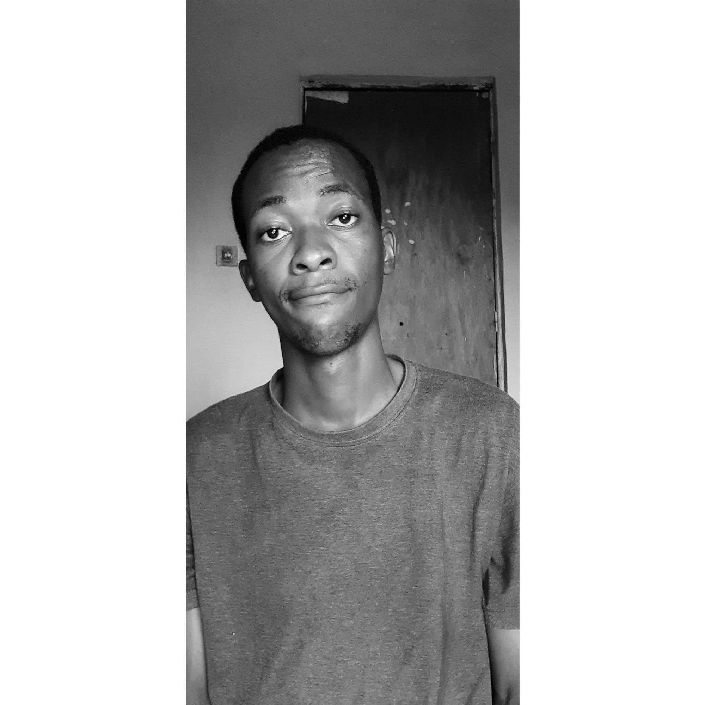

Daniel Quingongo Kitanaxi Filipe
Unity Developer & Font-end
Ola Prazer ! 👋🏿
Sou um desenvolvedor com brilho no olho, que está sempre em busca do próximo nível e que se empenha em trazer assuntos relevantes pra comunidade e aprender novas tecnologias.
Sou apaixonado por criar produtos úteis e de boa qualidade para os usuários, atualmente possuo 6 anos na área de desenvolvimento e ando me aperfeiçoando tanto na parte técnica quanto na parte de liderança de um time.
Alguns dos meus objetivos são ter um crescimento continuo, impactar a vida das pessoas e construir interfaces de boa qualidade.
